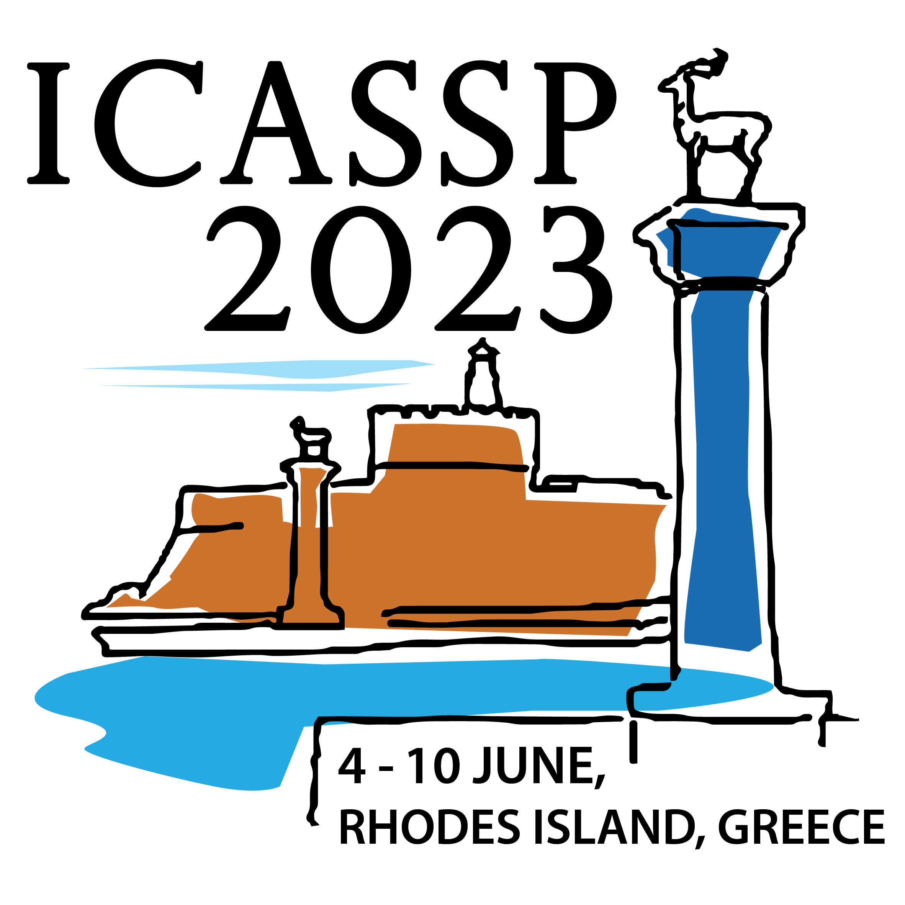
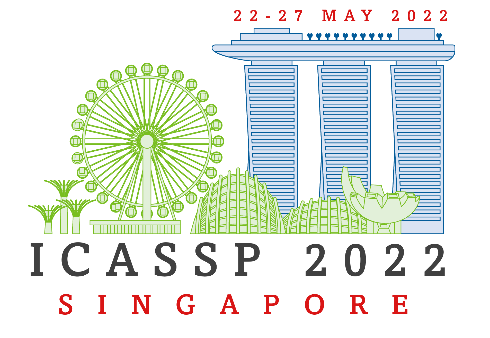

The Universal Intelligence Lab is directed by Dr. Mohammad Mohammadi Amiri. Our research is centered on advancing artificial intelligence by strategically utilizing data. In the fast-paced world of technology, effectively harnessing and optimizing data is crucial for unlocking the full potential of intelligent systems. We concentrate on using data to improve the capabilities of AI, with the goal of developing systems that serve everyone's interests. Our main research areas encompass large language models, data valuation, federated learning, and deep learning.
NEWS:
ICASSP 2023

Feb 2023
Our paper on ensemble methods for bilevel learning was accepted in ICASSP 2023. Congrats to Lisha!
ITA 2023
Feb 2023
Invited to present our work on bilevel optimization for distributed learning at EnCORE workshop at ITA 2023.
ICASSP 2023
Dec 2022
With Atlas Wang, we will present a tutorial at ICASSP 2023 on Bilevel Optimization and Its Applications to Machine Learning.
Cisco Research

Nov 2022
We are honored to receive the Faculty Research Gifts from Cisco Research.
IBM Research

Nov 2022
We are happy to receive several IBM-RPI AI research projects, part of the IBM AI Horizons Network.
AISTATS 2023
Sep 2022
Invited to serve as an Area Chair for AISTATS 2023.
MLSys 2022
Aug 2022
We organized a Cross-Community Federated Learning (CrossFL) workshop at MLSys 2022; see the recording [link].
ICASSP 2022

Jan 2022
Our paper with Prof. Ali Tajer's group was accepted in ICASSP 2022 on federated bandit learning with uncoordinated exploration.